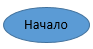

Графическая форма записи алгоритмов представляет собой такую форму, при которой каждая операция заменяетя специальным графическим обозначениме, а сами эти обозначения соединяются линиями связи в порядке следования операций
Для графической формы записи используются следующие графичекские обозначения:
 - блок "пуск/остановки"К главной